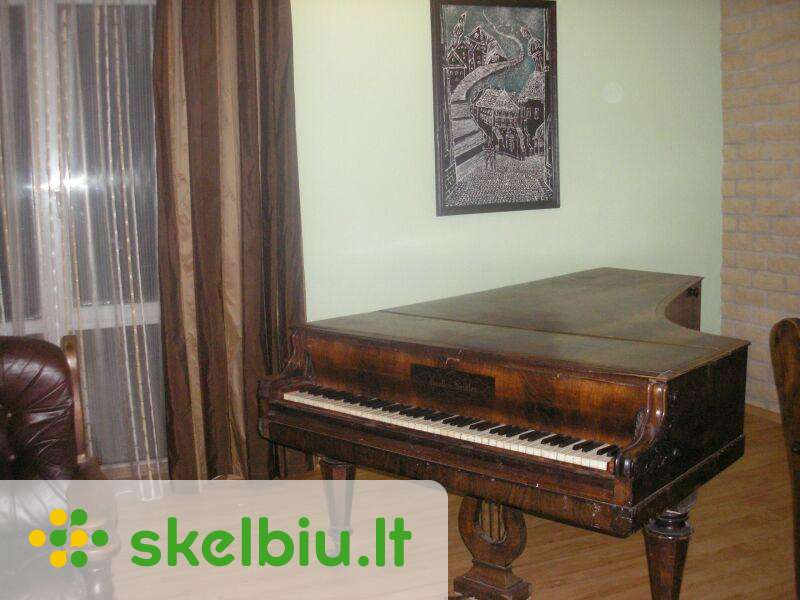

X Dėl geresnės Skelbiu.lt paslaugų kokybės naudojame slapukus (angl. cookies). Naršydami toliau, patvirtinate, kad sutinkate su slapukais. Tai bet kada galėsite atšaukti, pakeisdami nustatymus. Skelbiu.lt slapukų politika . Lankomiausias skelbimų portalas LT RU ( 0 ) Įsiminti skelbimai ( 0 ) Peržiūrėti skelbimai Paieškos ( 0 ) Prisijungti Registruotis fortepijonas, Visi skelbimai (20) Gauti naujus skelbimus: Ekrane El. paštu + Įdėti skelbimą Įsiminti skelbimai (0) Skelbimų: 20 Tinkamiausi viršuje Tinkamiausi viršuje Naujausi viršuje Atnaujinti viršuje
NEPRALEISKITE NAUJŲ SKELBIMŲ
fortepijonas, Visi skelbimai
Gaukite naujus skelbimus į ekraną Gaukite naujus skelbimus el. paštu Kaunas spalio 13 d. 1
Saksofono muzika visoms progoms
Muzika saksofonu-vestuves,krikstynos,gimtadieniai,fursetai ir t.t. Repertuaras nuo klasikos iki dziazo standartu.Groju su fonogramomis,galiu ir vienas,solo.Kokybiska aparatura,geras garsas.Galimas atlikimas-saksofonas+fortepijonas... Rokiškio r. rugsėjo 28 d.
Fortepijonas -antikvaras
Tikros muzikos gerbėjams ir suprantantiems, daugiau nei šimto metų senumo antikvaras 1845 m. fortepijonas Krall i Seidler, w Warszawie. Grojantis, tačiau išsiderinęs. Restauruoti plaktukėliai, išorė palikta autentiška. (Toks stovi Rokiškio dvare... Būklė: naudota 1 000 € Kaunas, ... prieš 1 d.
Fortepijonas Irmler
Fortepijonas Irmler Kaunas, Vilnius Labai geros būklės (mažai naudotas), baltas, lakuotas, Renner mechanika, gražaus skambesio, 1.62 m. Ilgio fortepijonas. Aukšto lygio meistro aptarnavimas įskaičiuota į pianino kainą. Suteikiama... Būklė: naudota Kaunas, ... prieš 1 d.
Fortepijonas Ed. Seiler
Geros būklės, aukštos klasės, (Renner mechanika), pagamintas Vakarų Vokietijoje. 1.70 m. ilgio fortepijonas. Atvežimas, garantija ir aukšto lygio meistro aptarnavimas įskaičiuotas į fortepijono kainą. Suteikiama fortepijono pakeitimo... Būklė: naudota Kaunas spalio 19 d.
Konstruktorius Pianinas (bet iš tiesų - fortepijonas), tinka vaikams nuo 6 metų, 141 detalė. Naujas, detalės neišpakuotos. Komplekte yra surinkimo instrukcija. Kaina skelbime galutinė. Galima Jūsų sąskaita siuntimas į kitus... Būklė: nauja 10 € Klaipėda, ... spalio 19 d.
Koncertinės klasės fortepijonas
Parduodamas baltas koncertinis fortepijonas Steinweg Nachf. Grotrian ( Vokietija) . Serijos nr. 15245. Kokybiškai restauruotas Vokietijoje. Instrumentas Klaipėdoje. Garantija 3 metai. Pristatymas visoje Lietuvoje nemokamai. Matmenys: ilgis - 195... 15 000 € Kaunas, ... prieš 1 d.
Fortepijonas Grotrian Steinweg
Faktiškai naujas, gražaus skambesio, aukštos klasės, spalva-juoda (blizgus lakas), pagamintas Vokietijoje, 1.90 m., fortepijonas. Aukšto lygio meistro aptarnavimas įskaičiuota į fortepiono kainą. Suteikiama instrumento pakeitimo galimybė į... Būklė: naudota Švenčionių r. prieš 1 d.
Antikvarinis fortepijonas
Senovinis fortepijonas. Gali būti naudojamas kaip interjero detalė. Kaina sutartinė 1 € Vilnius spalio 10 d.
Antikvarinis fortepijonas J.becker
Parduodu unikalu antikvarini fortepijona, pagaminta 1890-1900 metais Peterburge. Nuostabi interjero detale, klavisai pagaminti is dramblio kaulo, visi veikia, norint rimciau groti, reiketu suderinti. Kaina simboline, 250 Euru. 250 € Šiauliai, ... prieš 2 d.
Petrof kabinetinis fortepijonas
Kabinetinis fortepijonas Petrof Tvarkinga mechanika, puikiai laiko derinimą, kauliniai klavišai, reikalinga išorės restauracija. Tai tiesiog retas ir labai geras instrumentas už dar geresnę kainą. Būklė: naudota 1 050 € Reklama Kaunas prieš 24 min.
Fortepijonas Grotrian Steinweg
Fortepijonas Grotrian Steinweg kabinetinis Vokiečiu g-bos, dramblio kaulo klavišai. Pristatymas visoje Lietuvoje. Sekite naujienas facebooke http://www.facebook.com/Muzikos.instrumentai Kaina sutartinė Būklė: naudota Kaunas rugpjūčio 11 d.
Fortepijonas parduodamas piano for sale
Būklė: naudota 100 € Vilnius rugsėjo 30 d.
Vaikiškas laptopas
Nuostabus žaislas vaikams iki 3 m. Groja 5 skirtingas melodijas, kiekvieną melodiją gali groti 5 skirtingais instrumentais (smuikas, ksilofonas, trimitas, fortepijonas ir saksofonas) ir papildomai jūsų vaikas gali pridėti gyvūnų garsus ... Būklė: naudota 5 € Vilnius spalio 21 d.
- Jokių Tarpininkavimo Mokesčių
Vilnius, Senamiestis, Vilniaus g. 48 m² | 2 kamb. | 2/4 a. | Centrinis | Mūrinis 499 € (10 €/m²) Klaipėda, ... prieš 51 min.
Vaikiški nauji žaisliniai fortepijonai
Puiki dovana artėjančių kalėdų proga - spalvingi fortepijonai Galimybė prijungti telefoną / mp3 grotuvą Galimybė žaisti karoke 36 klavišai Iš anksto užprogramuotos melodijos Daugybė funkcijų garsams pakeisti Konstrukcija, panaši į tikrą... Būklė: nauja 51 € Kaunas prieš 1 d.
Auto: PEUGEOT 806. Kaina 2. MAN TRUCKERS WORLD. Kaina 2. 1980m. ALFA ROMEO. Kaina 3. LINAVA. Kaina 5. Avia: TP GEAR Naikintuvas(Tornado). Kaina 4.(parduotas) AIRBUS A320 CONDOR BERLIN. Kaina 3. Lėktuvas. Kaina 2.(parduotas). Medicina:... 1 € Vilnius prieš 1 d.
Populiariausias El. Pianinas Yamaha P-45 424eur
Populiariausias Skaitmeninis Pianinas Yamaha P-45B Geriausia kaina 424Eur. Kieta, fortepijoninė Hammer Action klaviatūra 88 klavišai, 10 Aukščiausios kokybės Sempluotų garsų: Fortepijonas , Pianinas, Elektrinis Pianinas, Vargonai,... Būklė: nauja 424 € Klaipėda, ... prieš 3 val.
Fortepijonai įvairūs
Daugiau info interneto svetainėje, puslapio apačioje.pianinas.weebly.c o m Fortepijonų derinimas ir remontas 868236089 Galiu pasiūlyti ir kitų pianinų ir fortepijonų už konkurencingą kainą. Ieškokite mūsų interneto svetainėje skiltyje... Būklė: naudota 2 700 € Kaunas, ... prieš 1 d.
Žaislinis pianinas (4 rūšys)
Būklė - Naujas 1. Žaislinis pianinas "Kirmėliukas" Kaina 7.50€ (1 nuotrauka) Tai puiki dovana kiekvienam mažam vaikui. Be įdomios išvaizdos, geros kokybės plastiko ir malonių pastelinių spalvų, pianinas turi daugybę funkcijų ir žaidimo režimų... Būklė: nauja 6,99 € Kaunas, ... prieš 1 d.
Sintezatorius - pianinas su mikrofonu Ag278
Muzika yra tiesiog neatsiejama gyvenimo dalis. Nuo pat mažų dienų mes esame pratinami prie įvairių muzikos garsų ir ne tik: lopšinės, įvairūs garsus skleidžiantys garsai ir kt. Galbūt laikas leisti savo vaikams patiems pradėti kurti muziką? Šis... Būklė: nauja 23,75 € E. parduotuvės prekė Lietuvių kompozitorių kūriniai birbynei ir fortepijonui patogupirkti.lt 7.99 € E. parduotuvės prekė Pažangus daugiafunkcinis fortepijonas abczaislai.lt 56.11 € E. parduotuvės prekė Pažangus daugiafunkcinis fortepijonas varle.lt 66.22 € E. parduotuvės prekė Vaikiškas fortepijonas su mikrofonu abczaislai.lt 24.36 € E. parduotuvės prekė Vaikiškas fortepijonas su mikrofonu varle.lt 28.74 € Daugiau prekių Kainos.lt » Įsiminti skelbimai Įdėkite skelbimą
Populiarios paieškos:
fortepijonas vilnius
fortepijonas klaipeda
fortepijonas kaunas
Prisijunk ir rask savo įsimintus skelbimus visur – kompiuteryje, telefone, planšetėje ARBA Jungtis su Facebook Jungtis su Google Skelbiu.lt pagalba: +370 664 55727 Darbo laikas: I-V 08:20 - 17:00 Naudojimo taisyklės / D.U.K. Kontaktai Svetainės struktūra D I G I N E T
Mauris vitae nisl nec metus placerat perdiet est. Phasellus dapibus semper urna. Pellentesque ornare, orci in consectetuer hendrerit, volutpat.
Pellenteque ornare

Fortepijonai | Instrumentai | Klavišiniai instrumentai ... fortepijonas, ranka, muzika Public Domain. License to use Creative Commons Zero - CC0. fortepijonas; ranka; muzika; Matmenys 6016x4016; Failo dydis 2.43MB ; Rezoliucija 5K ; Įkėlimo data 2017-10-30 ; Peržiūros 46 ; Atsisiuntimai 24 ...
Fortepijonas - LRT Erdvę taupantis, puikaus skambesio, mažas fortepijonas ( A91/ P136/G55 CM, svoris 150 kg). Tarp „Art Deco“ ir „Bauhaus“: Sukurtas Ferdinando Manthey ir gaminamas buvo 1960s/1970s iki 1983metų.
Fortepijonas - Unijapedija Fortepijonas – nuostabus muzikos instrumentas, pasižymintis gražiu tembru, plačiu diapazonu, įvairaus repertuaro atlikimo galimybėmis. Nuoširdžiai stengiuosi, kad mano mokiniai pamiltų šį instrumentą ir, baigę lankyti pamokas, neuždarytų fortepijono dangčio visam laikui.
fortepijonas, 4 puslapis - išsamiai DELFI.lt Fortepijonas – klavišinis muzikos instrumentas, dažniausiai naudojamas koncertams. Jo vibratorius – stygos. Kad stygos pasidarytų tamprios, reikia jas iš anksto viena kryptimi įtempti. ...
Fortepijonas - lm Fortepijonas kaip progreso auka ; Ar kada pagalvojote apie kelią, kurį turi pereiti atskiri, kasdieniai objektai, kurie supa mus kasdieniame gyvenime?> Jei apie tai negalvojote ar jums tiesiog nuobodu su istorija, aš iškart jus perspėsiu perskaityti: taip, bus datų ir jų bus daug. faktai, kuriuos pabandysiu padaryti, kiek mano kuklios galios, nėra tokie sausi, kaip jų mokytojai teigė ...
Fortepijonas - Kūdikiai Fortepijonas – klavišinis muzikos instrumentas, dažniausiai naudojamas koncertams. Jo vibratorius – stygos. Kad stygos pasidarytų tamprios, reikia jas iš anksto viena kryptimi įtempti. Fortepijonas išsiskiria dideliu diapazonu, turtingu tembru ir judria skambesio dinamika.
Fortepijonas – RUDAMINOS MENO MOKYKLA Fortepijonas ir Klavikordas · Žiūrėti daugiau » Koncertas. Klasikinės muzikos koncertas Australijoje Koncertas – gyvas pasirodymas, įprastai muzikos, prieš auditoriją. Nauja!!: Fortepijonas ir Koncertas · Žiūrėti daugiau » Oktava. Muzikoje oktava yra vadinamas intervalas tarp dviejų garsų, kurių dažniai skiriasi du kartus ...
Fortepijono istorija pasaulio progreso kontekste ... fortepijonas - klavišinis styginis instrumentas, didesnis nei pianinas.Jis dažnai naudojamas koncertuose ir kituose viešuose renginiuose. Vertimai [] fortepijonas: klavišinis styginis instrumentas
fortepijonas - išsamiai DELFI.lt Kategorija: Fortepijonas Išsilavinimas. Ingrida Dirmienė baigė Lietuvos muzikos ir teatro akademiją. Darbo patirtis. Nuo 1991 metų dirba Utenos muzikos mokykloje fortepijono mokytoja, koncertmeistere. 1998 metais suteiktas mokytojos metodininkės vardas. 1996 – 2006 m. - fortepijono skyriaus vedėja.